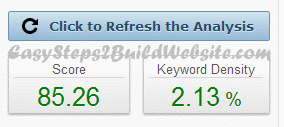

Welcome to SEOPressor v5 review
It is one of the best seo plugin for WordPress. Over 1,20,000+ Websites uses this plugin because it works out of box. Here I’m gonna discuss it’s cool yet very powerful features, which can help you to skyrocket your search engine (Google, Bing, Yahoo!) ranking.
Often we hire experts for search engine optimization tasks but ask yourself: Are you going to hire an expert every time? I would not prefer to do so, until unless it’s free. Moreover, if we have plugin which can take care all of our seo tasks and only costs 47$ (as of 09/2013, this may increase in future because of the positive feedback this plugin is getting from all of the happy customers) as a one time payment along with life time updates then why to go anywhere else.
SEOPressor v5 review in detail
Let’s have a look at the cool features of SEOPressor 5 –
1) SEO Score

Have a look at the above snapshot. It analyses your content and gives you a SEO score, the more is the score, the more chances for ranking higher in search engine. You don’t have to worry while writing your article, SEOPressor will provide all the suggestions to improve SEO score, which thereby will boost your ranking. In cases of an over optimization, it will give you the score more than 100 and will let you know what you can do to avoid it.
2) LSI keywords Suggestions

You can see in the above screenshot that it is displaying the lsi keywords for primary keyword “on page seo”. Once done with primary keyword optimization, you can select secondary keyword or third keyword from drop down as shown above. Suggested keyword list would be updated according to the keyword you select from dropdown. This way, the post can be optimized not only for primary target keyword but for all the desired keywords.
A brief about LSI: These are nothing but synonyms or related keywords, by using them in your article you can improve the quality and credibility of it. Not only it improves the content, it has been used by search engines for judging the quality of content and ranking them for certain keywords. SEOPressor v5 provides LSI keywords for our target keywords, it will show you the whole list of them, you have to just click on the keyword and it would be auto inserted to your post.
3) Over Optimization Check
This is one of the best feature, which I have never seen in any of the WordPress SEO plugin. It gives you the possible over optimization warning when you are writing your post. It considers all the parameters while doing over optimization check, not only content it will also show you a warning even if you overuse the keywords in image’s alt text.
4) Keyword Decoration
One of the old tip which is still working is to use your target keyword in header tags(H1, H2 & H3). Have them bold, italic and underline in few places to get them noticed by search engine (bolder, italic and underline keywords carry more weight compared to the normal ones).
You must be thinking what a easy trick, I can do it myself why do I need a plugin for that? hehe. It’s not that simple, doing it improves SEO but overdoing it can bring negative results. That’s where this plugin comes in picture, it will show you what to do, where to do and what not to do. Moreover, SEOPressor v5 would always let you know whenever it feels that you have overdone something (to avoid over optimization penalties).
5) URL
It is good to have main keyword in the following places –
a) url of the post/page title
b) As an anchor text for internal link
c) As an anchor text for external link
This plugin checks all of them.
6) Content
Content plays a major role when it comes to search engine ranking, if content is not good then it is next to impossible to rank well. Writing quality and unique content is in your hand, however there are certain areas, where you need to focus and SEOPressor v5 covers all of them quite well. It scans whole content for keyword density, LSI words density, image alt text, first & last paragraph, meta description, meta keywords and much more and provides a checklist (See above image).
More or less, it enforces you to write quality content which would get attention by visitors and search engines.
7) Makes you score 100% in your SEO score card
In the 1st point, I have discussed above SEO score which this plugin provides based on the content. However, its not only limited to this, SEOPressor v5 also gives you suggestions to score more in SEO. Just try to focus on those suggestions and you will yourself make your content 100% full proof :).
8) Videos
I’m pretty much sure that you would be knowing how important is to have images on your posts. Do you know, video are as powerful as images and embedding videos to your posts would skyrocket your ranking (It ins’t always true but whenever you feel a need to have a related video on your post, just use this feature). Needless to say more here, screenshot is enough to let you know how easy it is if you are using SEOPressor v5.
9) Optimize post for more than one keyword
Do you perform a keyword research before writing a post? Isn’t it a silly question, most of us do it religiously. How many keywords do you target when you write the post? I’m sure it would be more than one and luckily SEOPressor v5 knows it that’s why it has provide the option to add upto 3 keyword for optimization as you can see in above snapshot.
If you want to target only one keyword then it’s perfectly fine, in that case you don’t need to add other two keywords, simple enough!.
10) Automatic smart linking using SEOPressor v5
It was a secret few years back but now everybody knows the importance of internal links, especially when you are writing posts related to each other.
Have you every heard of a plugin so called SEO smart links? I’m sure you would have heard, first let me give you a brief what that plugin does then we will come back to our point. SEO smart links is known as auto interlinking plugin, I know it has some other feature likes affiliate links cloaking and all but the popularity it gained because of it’s auto interlinking feature.
Surprise! If you are planing to buy SEO smart links or any other plugin for auto linking & external link cloaking purpose then it’s better to drop the idea and go for SEOPressor v5. As you can see in above screenshot, how easily it can capture all the required details for auto internal links.
11) SEOPressor v5: Cloaking of affiliate links
Are you always use some plugin to hide (cloak) affiliate links? Answer would be yes, but let me ask you one thing – does your plugin link the cloaked url automatically for the certain keywords? Answer of this would be no, until unless you are not using any premium plugin. Let me come to the point – SEOPressor cloaks affiliate links as you can see in above screen and auto link them to certain keyword all over your website.
In brief -it cloaks the affiliate url and auto links the specified keywords to the cloaked url to increase CTR, conversion rate and sales.
12) WordPress Role Settings
You may be accepting frequent guest posts so it is important to set roles for the contributes and guest bloggers. SEOPressor gives you the liberty to set roles for other users as well as you can create custom roles as shown above and assign them to user or group of users.
You can add below access to any role just by configuring role settings in SEOPressor 5 –
| Access List of Posts | Access to the list of Posts and Pages with SEOPressor information |
| Access Score Box | Access to SEOPressor Box in Post add and edit page |
| Full Access | Full Access, including administrative options |
| Access Settings and set Minimum Score | Permission to access to global Settings including the access to set the Minimum Score on Advanced Settings tab |
| Access Settings without access to set Minimum Score | Permission to access to global Settings without permission to set the Minimum Score on Advanced Settings tab |
13) Rich Snippets
Are you able to see rating stars in search engine results? Such kind of SERP results are enough to let users know that it’s a review and how much rating author has given without even visiting the page. This is a extra information which we are providing in form of meta data and this would be visible to the users in SERPs. It definitely improves CTR.
SEOPressor supports rich snippets for – reviews, people, products, recipes, events, music, business & organizations.
14) Social SEO Settings under post editor
Everybody says social media signals are considered by search engine algorithms, I’m not very sure how they interpret it but the one thing I’m sure is that it improves traffic. So why not take advantage of this feature and share content on facebook & twitter efficiently.
It provides –
Open graph support for Facebook – This tells how Facebook understands the content.
Twitter card support – You can control, how your tweets look like when somebody shares your webpage’s link while tweet/re-tweet.
15) Meta Keywords & Description
Even though Google announced that they are not going to consider meta keywords and meta description in their search engine algorithm, we should still use them ethically.
Why I’m saying this? When someone searches over Google, meta description is the one which is visible to user, it can affect your CTR if not written properly. But, the most important thing is that – if the description doesn’t have search term then it picks up the para from the content which has it. Hence, it’s a good practice to have all of the target keywords in meta tags. SEOPressor v5 has tons of settings to play with meta tags.
16) Image Optimization with Alt text and Image titles
SEO experts suggests to use keywords in alt text but do you know why? It because it improves on page search engine optimization and increases the traffic to your site from image searches. So, it’s a win and win situation when you are getting two benefits just by optimizing the images.
This plugin has lot of settings which you can configure as per your need (Refer above image).
17) Page/Post SEO score at one place
You don’t need to open each and every post separately in order to view SEO score, plugin has a panel which displays all of the posts/pages along with keywords and SEO score. This may be useful when you are installing SEOPressor v5 on a well established blog with lots of existing post/pages.
18) Other useful features
Dublin core support – Its a Metadata which follows all the metadata standards and has been accepted widely. I’m not sure whether it has to do something with SEO now as search engine are started using metadata to understand our content better so may be in future it would hold some value.
Add tags – Provides two services (Tag the net & Yahoo!) to fetch the tags according to your content, which you can select and then add. Apart from this it can automatically add/override tags to the existing posts.
Post slugs optimization – Inbuilt sittings to remove stop words from post slugs to make them SEO friendly.
Posts titles optimization – Optional settings to automatically add main keyword to the post title.
Automatic keyword decoration – You can optionally auto decorate (bold, italic, underline) the target keywords.
19) License
- Single site license: 47$ – for one domain only.
- SEOPressor Unlimited: Multi site license: 97$ – for multiple domains.
Let me know how did you find this review of SEOPressor plugin.
Don’t buy this product. I wanted a refund, and the owner for the 30 day money back guarantee and the Owner Daniel Tan not only tried to fake like he gave my money back, but now he is not responding to my emails.
Hello James, Can you please share the issues you are facing with this plugin? It will help others to decide whether to buy this plugin or not. Also, raise a ticket at this link: https://danieltan.zendesk.com/anonymous_requests/new for refund.